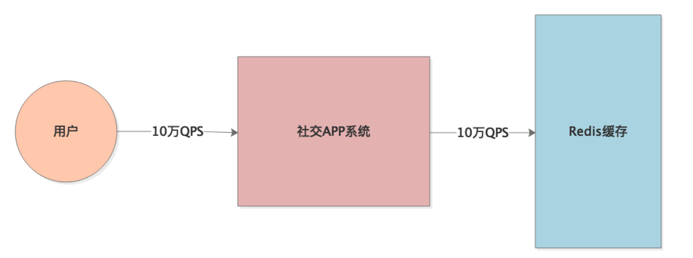
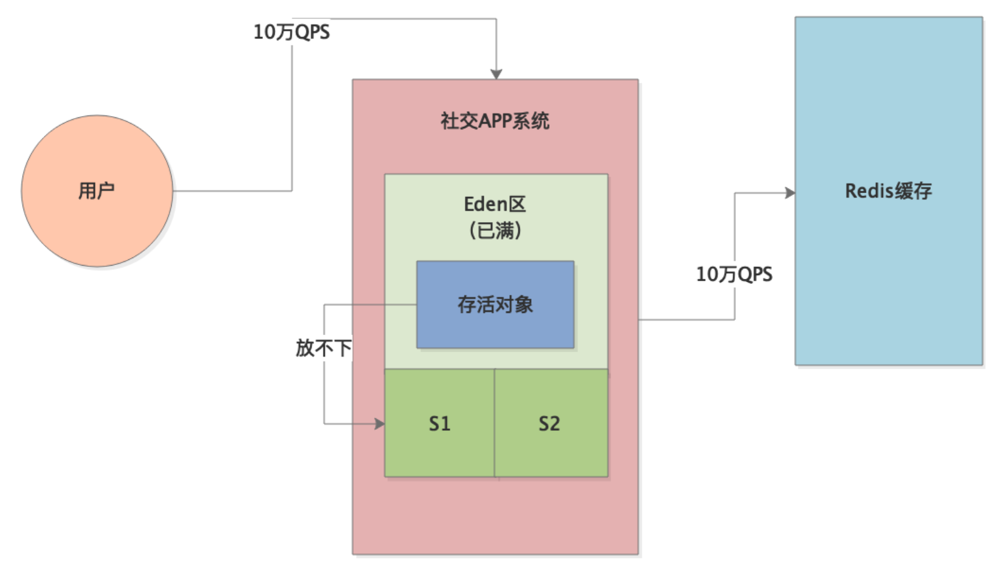
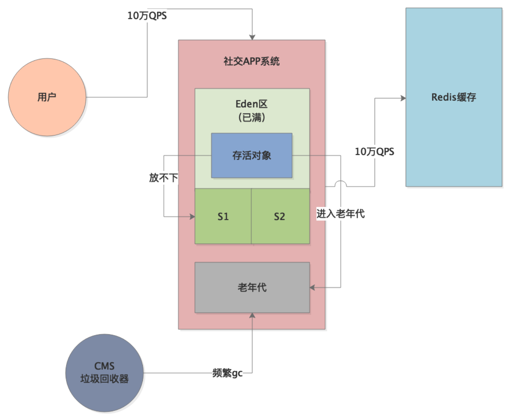
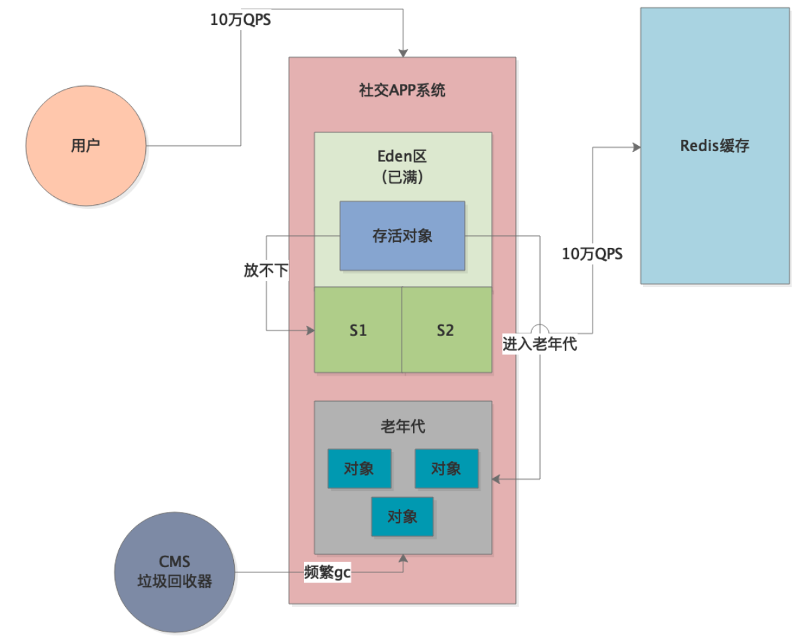
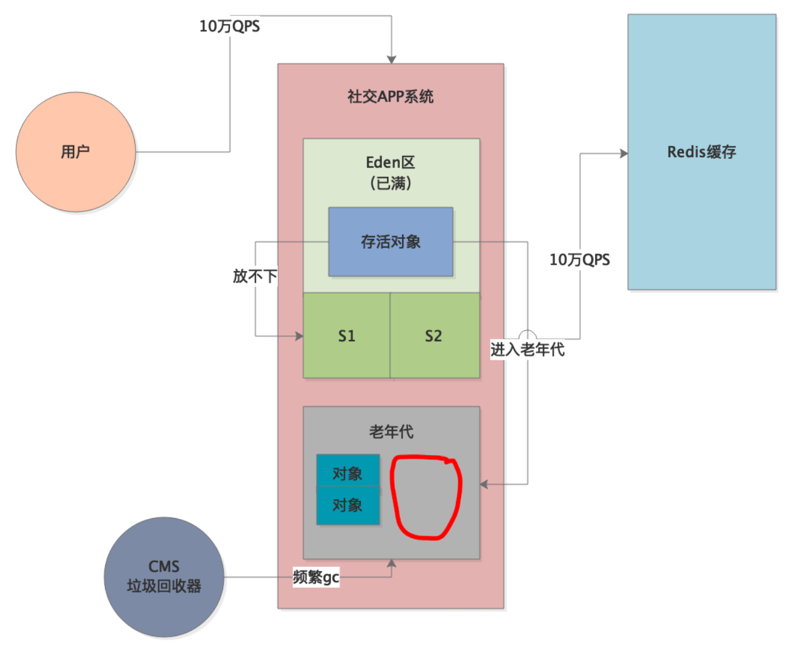

本案例的背景是一个高峰期每秒十万QPS的社交APP，这类APP流量最大的模块就是个人主页模块，会有大量的用户在一个集中的时间段内（比如晚上）频繁访问各种个人主页数据，而且个人主页的数据量通常比较大，在几MB左右：

上述案例，由于高峰期的每秒并发量太高，所以新生代的Eden区会被迅速占满，频发触发Young GC。而在Young GC的时候，下一秒的请求又来了，导致很多请求是还没来得及处理完的，导致每次Young GC的时候很多对象需要存活下来，因此在高峰期经常会出现存活对象太多，导致Survivor区放不下的问题：

所以，此时就会有大量对象频繁进入老年代，从而频繁触发老年代的GC：

我们先来看下系统优化前的一些关键JVM参数：-XX:UseCMSCompactAtFullCollection -XX:CMSFullGCsBeforeCompaction=5
上述采用CMS对老年代进行垃圾回收，默认为标记-清除算法，所以每次GC后都会出现许多内存碎片。
我们来看下整个流程，首先老年代中有许多垃圾对象：

CMS回收掉一些垃圾对象后，就会出现内存碎片，由于-XX:CMSFullGCsBeforeCompaction=5，所以5次Full GC之后才会进行内存碎片整理：

但是，大家考虑一个场景，一次Full GC之后，老年代中有一部分内存里都是大量的内存碎片，只有部分可用的连续空间。这时候，随着大量对象进入老年代，一旦连续可用空间不足以容纳这些对象，就会导致立马触发下一次Full GC。
这样，随着一次次Full GC，导致老年代产生更多的内存碎片，触发下一次Full GC的速度也会越来越快，直到5次Full GC之后才会去整理内存碎片。
这个案例的优化，其实非常简单。首先，可以用jstat分析下JVM的运行情况，判断出每次Young GC后存活对象的大小，然后增加Survivor区的大小，避免存活对象频繁进入老年代。
另外，优化后部分对象还是慢慢会进入老年代，毕竟系统的负载很高，所以调优后每小时还是会有一次Full GC。
所以，第二个优化点就是针对CMS内存碎片问题进行优化。在降低了Full GC的频率后，务必设置以下参数，使得每次Full GC后都进行内存碎片整理：-XX:UseCMSCompactAtFullCollection -XX:CMSFullGCsBeforeCompaction=0
这样虽然每次Full GC的内存碎片整理需要消耗更多的时间，但是跟频繁Full GC的时间消耗相比，效率会提升很多。
本章，我们通过示例分析了频繁Full GC导致的内存碎片问题，通过参数-XX:CMSFullGCsBeforeCompaction可以配置内存碎片整理的次数，从而提升系统的运行效率。